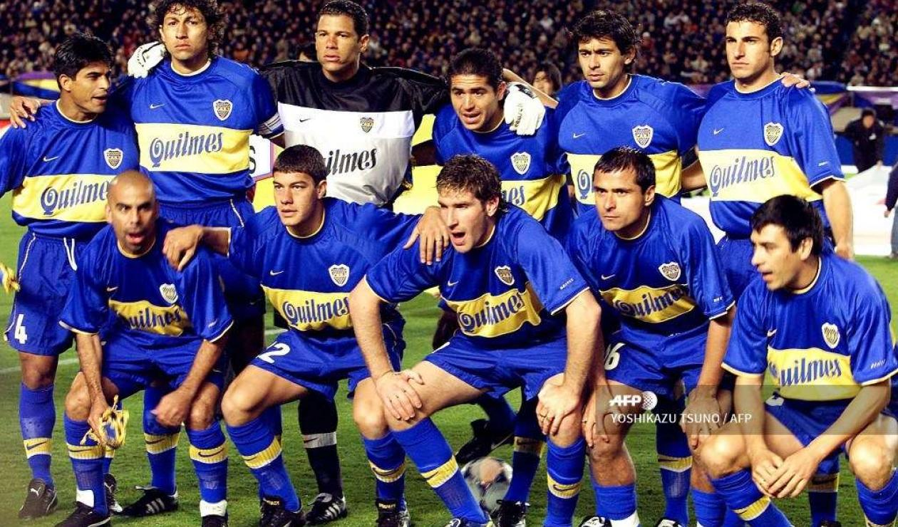

Aprendiendo su historia.
Para hablar de titulos mundialmente el nombe de los dos unicos grandes equipos de la Argentina suenan y fuerte.Boca en este caso, internacionalmente es uno de los mas victoriosos del mundo en este caso se posiciona al igual que el Barcelona, empatados de copas, en el segundo lugar escoltando al primero y mas ganador internacional el Real Madrid. River en los ultimos anos ha ganado grandes competencias internacionalmente, esto provoco que suba brutamente en las posiciones de los mas ganadores internacionalmente del mundo de maner que finalmente, por el momento, esta posicionado en el 6to puesto con el liverpool y el Bayern Munich.
Formacion de Boca en su era dorada, al mando del director tecnico, el virrey, Carlos Bianchi.Quien los llevo a la gloria en los anos 2003 y 2005, ganando el mundial de clubess ante los ojos del mundo y encontra de grandes equipos como el Milan, de Ronaldhino, y el Real Madrid de Roberto Carlos.
Boca Juniors ha ganado veintidós títulos internacionales, de los cuales dieciocho son reconocidos por CONMEBOL/FIFA:
También ganó cuatro títulos reconocidos por AFA/AUF:
Siendo así uno de los clubes más laureados del fútbol mundial.
Esta imagen de la formacion de Riber es de estos momentos, donde river esta ganando grandes cosas. Entre ellas las ultimas 5 llaves que se cruzo con su maximo rival, Boca.Todo esto bajo el comando de , Napoleon, El muneco Gallardo, este antes de ser tecnico fue un gran jugador del club.Hoy en dia es idolatrado por la gente de Riber debido a que hizo una gran carrera repleta de titulos tanto como de jugador como de director tecnico del club.
Los 11 títulos internacionales organizados por la Conmebol y/o FIFA
Los 5 trofeos entre AFA y Asociación Uruguaya de Fútbol, avalados por Conmebol
Los 35 títulos de Primera División en el profesionalismo
Los 3 títulos de la Era Amateur
Las 10 copas nacionales